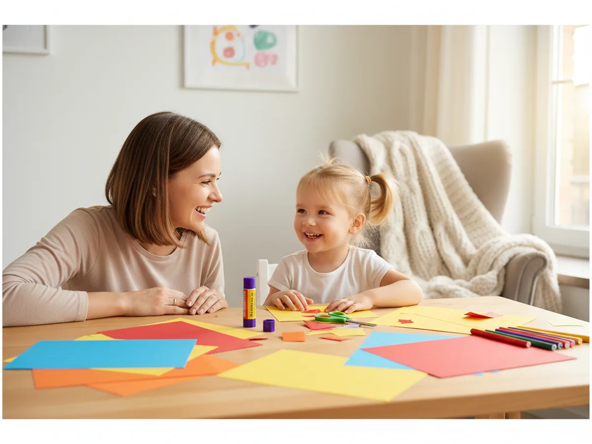
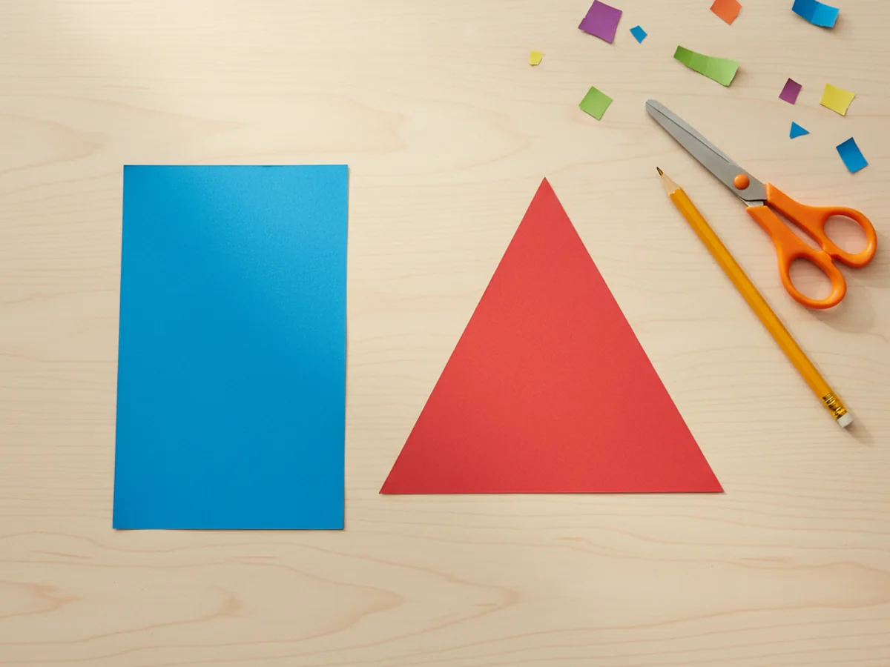
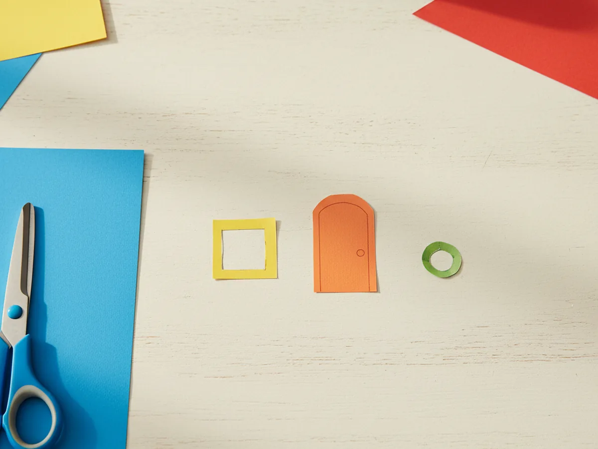
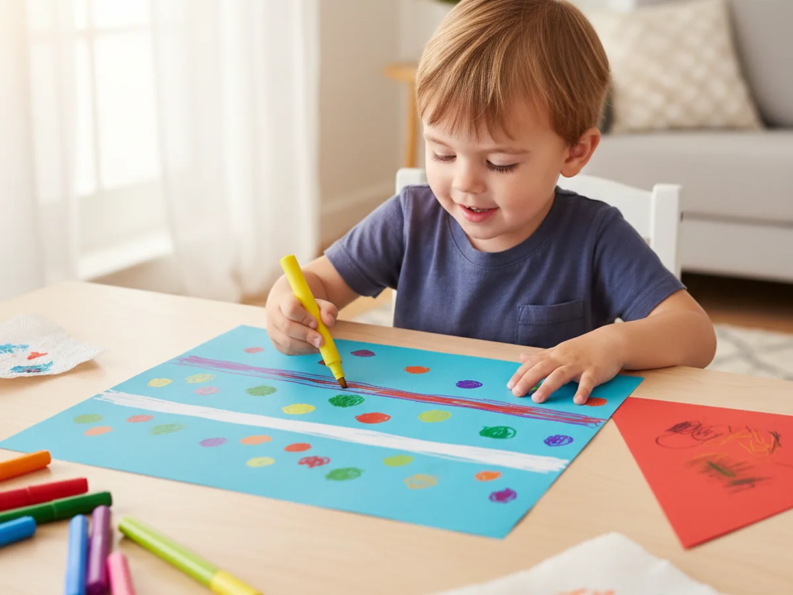
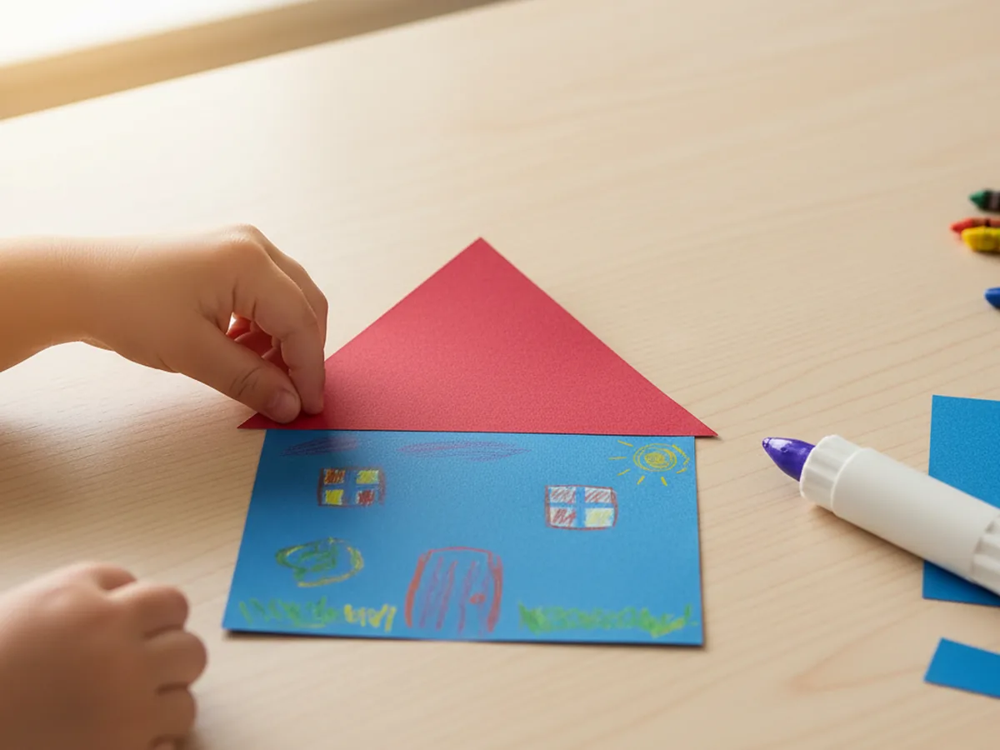
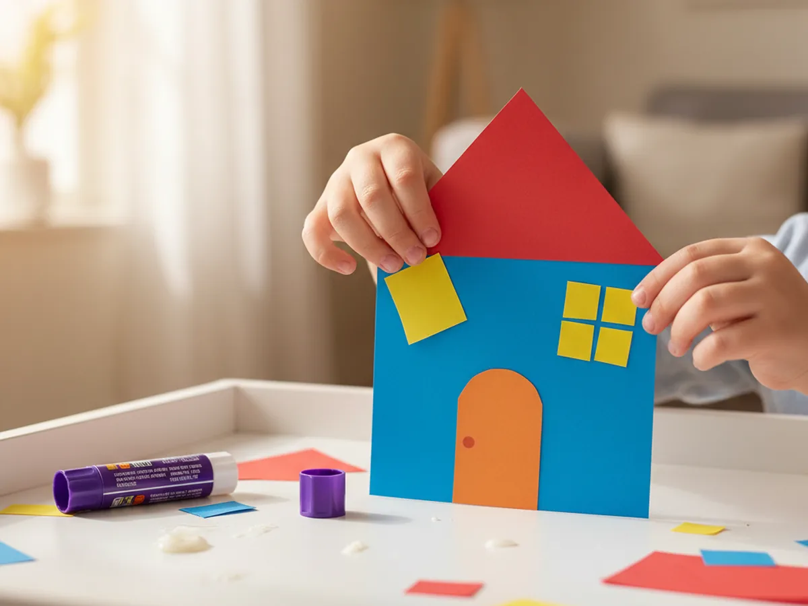
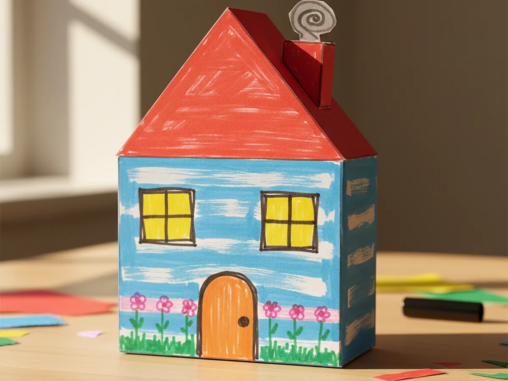

Published on April 14, 2026

There is something wonderfully cozy about making a little house out of colorful paper. This paper house craft uses just a few simple shapes, a rectangle for the walls and a triangle for the roof, plus small cutout windows and a door, and it all comes together in about 25 minutes from start to finish. 🏠
It is the kind of project that feels easy from the very first snip of the scissors. No paint, no messy materials, nothing complicated to prepare in advance. Just some bright construction paper, a glue stick, and a child who is ready to create something they will want to show everyone when they are done.
Whether you make it as a rainy-day activity, a little home decor piece, or a fun way to spend a quiet afternoon together, this paper house craft always delivers a big, cheerful result with very little stress.
Kids are naturally drawn to making little worlds of their own, and a paper house gives them exactly that feeling. The shape is immediately familiar and satisfying. The clear outline of a house is something young children recognize right away, and every decorating decision along the way is completely theirs to make. From the color of the roof to the pattern on the walls, your child gets to design their very own home from a blank piece of paper.
The process also quietly builds real skills. Cutting paper develops fine motor control, gluing builds precision, and deciding where to place each element encourages early spatial thinking. But what children mostly feel in the moment is the simple joy of making something that looks like a real house, only cuter and made entirely by their own hands. That combination of creative freedom and a clear, recognizable result is exactly what makes this paper house craft such a hit every single time. 🎨

Everything you need for this paper house craft is simple, beginner-friendly, and easy to find.
These steps are simple and beginner-friendly. Young children can handle the gluing and decorating, while older kids can take on the cutting too.
Choose your favorite color for the house walls and cut a large rectangle from that sheet of construction paper. Aim for roughly 6 inches tall and 8 inches wide, but the exact measurements do not need to be precise. A slightly taller or wider house still looks great once everything is assembled. Then pick a different color for the roof and cut a large triangle from that sheet. The triangle should be a little wider than the rectangle at its base so the roof overhangs slightly on both sides, just the way a real house would. Pre-cut these two main shapes for younger children so they can jump straight into the creative steps without getting stuck.

From a contrasting color of construction paper, cut two small squares or rectangles for the windows, roughly 1.5 to 2 inches each. For the door, cut a taller rectangle from another color, about 1.5 inches wide and 2.5 inches tall. A gently rounded top on the door looks especially charming and is easy to achieve by simply trimming the two upper corners with your scissors. If you want a little extra detail, cut a tiny square from yellow paper for a window in the door, or a small diamond shape for a decorative panel. Keep all the pieces simple and sized so they sit naturally on the house body without crowding each other.

Before assembling the house, invite your child to use washable markers to decorate the rectangle house body. This is the most creative step and entirely theirs to lead. Horizontal lines drawn across the rectangle become wood siding or planks. Evenly spaced brick shapes give the house a classic look. Polka dots, zigzags, and loose swirls are just as valid and often far more colorful and personal. The roof triangle can be decorated too, with diagonal lines for shingles or tiles. Encourage your child to fill the whole surface generously with color, because the more vibrant the decoration, the more striking the finished paper house craft will look when it is all put together. ✂️

Apply a line of glue along the top edge of the decorated rectangle. Then press the triangle roof down so the base of the triangle lines up with the top edge of the rectangle and the peak points straight upward. Check that the triangle overhangs evenly on both sides before pressing firmly. Hold the pieces together for several seconds while the glue grips. If any part of the roof lifts away at the corners, apply a small extra dot of glue and press again until it holds flat. Once the roof is attached, your house shape is already fully recognizable and the whole craft starts to feel real and exciting.

Apply a small dot of glue to the back of each window piece and press them onto the upper half of the house body, one on each side. Leave a little space between the windows and the edges so they sit naturally within the walls. Then apply glue to the back of the door rectangle and press it to the lower center of the house, right at the bottom edge where a front door would naturally sit. Press each piece flat and hold for a few seconds. The windows and door transform the assembled shapes into a real little home, and the paper house craft instantly gains personality and warmth the moment they go on.

This is the step that turns a simple paper house into something truly personal. Use markers to draw window frames in a contrasting color, a small round doorknob on the door, flower boxes beneath the windows, garden flowers growing along the base of the house, a winding path leading to the front door, or a puff of smoke curling up from a drawn chimney. There is no right or wrong at this stage. Every small detail your child adds makes the house feel more like their own. When all the details are done, your finished paper house craft is ready to display proudly on a shelf, the refrigerator door, or a bedroom windowsill where everyone can admire it. 🏡

Night Scene Version: Make the house on a sheet of dark blue or black construction paper as the background. Use a white marker or gel pen to draw stars and a crescent moon in the sky, and cut small yellow rectangles for glowing windows. The contrast between the dark background and the bright house creates a beautifully atmospheric nighttime cottage effect.
Winter House Version: Use white or pale blue paper for the house body and a dark charcoal or navy triangle for the roof. Cut small white triangle shapes and glue them along the roofline to suggest snow sitting on the edges. Add tiny white dot snowflakes around the house with a marker for a cozy, wintry feel that works beautifully as a seasonal decoration.
Neighborhood Street Display: Make three or four houses side by side in different sizes and colors on a long sheet of cardstock as the base. Cut small green triangles for trees to stand between the houses, and use markers to draw a road, clouds, and a sun at the top. This version is especially fun as a family project and makes a sweet display to keep on a windowsill or tape to a wall.
This paper house craft is one of those projects that delivers a big, cheerful result from a very simple setup. The supplies are things you likely already have at home, the steps are easy to follow from beginning to end, and the finished house always looks more polished than anyone expects going in.
Whether you make one cozy house on a quiet afternoon or build a whole street of colorful homes over a weekend, the craft brings out real creative energy and leaves kids genuinely proud of what they made. Give it a try and enjoy every sweet moment at the craft table together.
If your child loved this paper house craft, these other simple paper projects are a wonderful next step.
Happy crafting, and enjoy every cheerful little moment with your child.